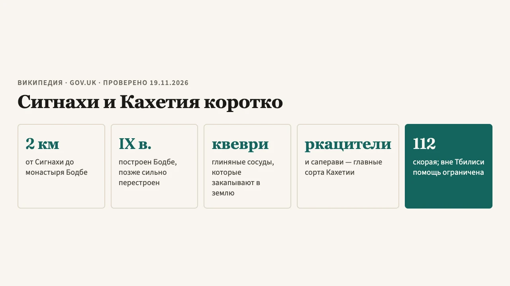
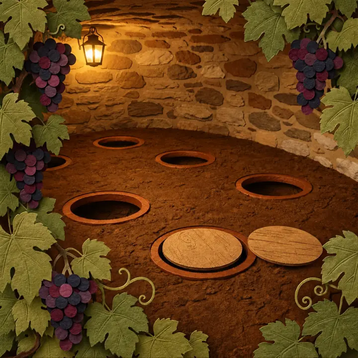
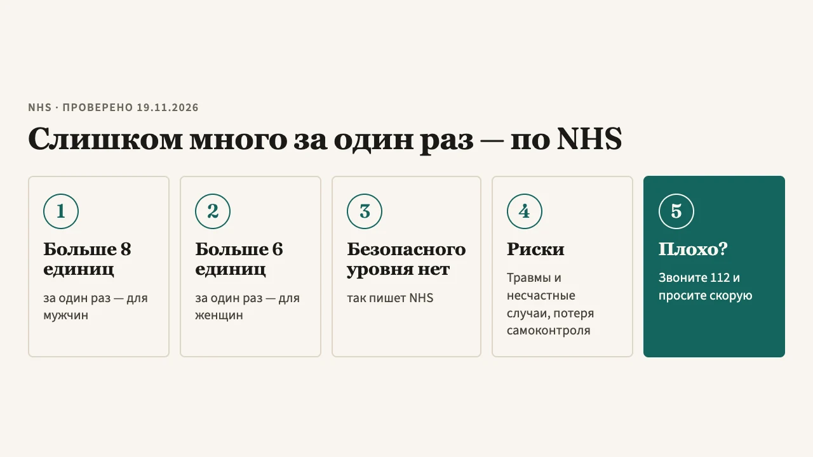
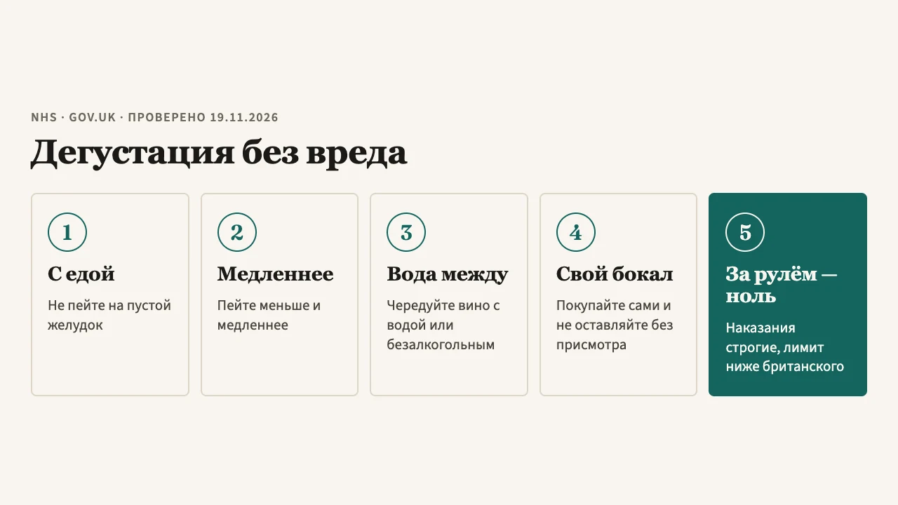

- До Бодбе
- 2 км
- Бодбе
- IX в.
- Квеври
- сосуды в земле
- Главные сорта
- ркацители и саперави
- Скорая
- 112
Статья входит в справочник о медицине в Грузии.
Что посмотреть в Сигнахи
Главное — сам город: вид с холма на долину, две церкви, музей и мощёные улицы. А в 2 км от него стоит монастырь святой Нино — одно из главных мест паломничества в Грузии.

По английской Википедии, это один из самых маленьких городов страны и центр одноимённого муниципалитета. Он лежит в Кахетии — самом восточном регионе Грузии.
Город стоит на крутом холме над широкой Алазанской долиной. На горизонте видны Кавказские горы. Туристов сюда тянет само место: Сигнахи находится в сердце винодельческих районов Грузии, а ещё здесь пастельные дома и узкие мощёные улицы.
Название, по Википедии, происходит от тюркского слова со значением «убежище» или «окоп». Как поселение город впервые упомянут в начале XVIII века.
В 1762 году царь Ираклий II финансировал строительство города и возвёл крепость, чтобы защищать округу от набегов. Остатки укреплений XVIII века и сейчас окружают Сигнахи. Длину стены и число башен мы не приводим: в нашем источнике их нет.
Ещё две достопримечательности — в самом городе:
- церкви Святого Георгия и Святого Стефана — обе грузинские православные;
- музей Сигнахи — в 2007 году местный этнографический и археологический музей обновили и сделали из него современную экспозицию.
Часы работы музея и цены билетов мы не пишем: проверенных данных у нас нет.
Наш совет. Улицы здесь мощёные и идут по крутому холму. Берите удобную обувь без каблукаю.
Город любви
Так Сигнахи называют в самой Грузии. По Википедии, многие пары приезжают сюда только ради того, чтобы пожениться.
Как здесь регистрируют брак, какие нужны документы и сколько это стоит, мы не пишем: проверенных данных нет. Если едете ради свадьбы, уточняйте условия заранее и по официальным каналам.
Для всех остальных «город любви» — просто красивый повод заехать: прогуляться по улицам и посмотреть на долину с холма.
Монастырь Бодбе
Это монастырь святой Нино в 2 км от города. Его построили в IX веке, а потом сильно перестроили — так пишет Википедия (на английском).
Святая Нино — проповедница IV века, которая принесла грузинам христианство. Её мощи хранятся здесь, поэтому Бодбе — одно из главных мест паломничества в стране. Сейчас это женский монастырь.
В позднее Средневековье его особенно ценили цари Кахетии: здесь они короновались. В 1615 году монастырь разграбили войска персидского шаха Аббаса I, а потом его восстановил царь Теймураз I.
Монастырь стоит среди высоких кипарисов на крутом склоне над Алазанской долиной, и оттуда видны горы Большого Кавказа.
Монастырь действующий, так что одевайтесь скромно. GOV.UK (на английском) советует за пределами городов помнить о местных нормах скромной одежды — особенно в храмах.
Наш совет. Положите в сумку платок или лёгкую накидку с рукавами. Так проще зайти в храм, не переодеваясь.

Кахетия: вино и квеври
Это главный винодельческий регион Грузии. Так его называет английская Википедия (на английском). Многие лучшие виноградники сосредоточены в долинах рек Алазани и Иори, а с севера регион ограничивают Кавказские горы.
Главные сорта винограда здесь — ркацители и саперави. Ркацители, по Википедии, широко идёт на белые вина. Саперави — самый распространённый красный сорт в регионе.
Сегодня здесь работают и маленькие традиционные хозяйства, и крупные коммерческие винодельни. Их названий мы не даём: выбирайте по рекомендациям на месте.
Квеври
Это большие глиняные сосуды, которые закапывают в землю. В них вино бродит и выдерживается — так Википедия описывает традиционный грузинский способ, с которым связана Кахетия.

Википедия называет этот способ частью давней грузинской традиции. Ркацители и саперави, по той же статье, прочно связаны и с этим регионом, и с грузинским виноделием в целом.
Возраст традиции и её статус мы не приводим: в нашем источнике об этом нет точных данных.
Наш совет. Планируйте дегустацию как обед, а не как перекус. Почему это важно — в разделе ниже.
Как добраться до Сигнахи
Наш совет: удобнее всего на машине, своей или арендованной. Расписаний, времени в пути и цен здесь нет: проверенных официальных данных у нас нет.
Если поедете сами, сначала прочитайте наш раздел о вождении в Грузии.
Без машины смотрите маршрутки. Как ими пользоваться, мы рассказали в гиде по маршруткам (на английском).
Дороги и водители
Правительство Канады (на английском) пишет: смертельные аварии в Грузии часты. Водители нередко гоняют, часто перестраиваются и садятся за руль пьяными.
В сельских районах дороги бывают плохими. Канада перечисляет:
- неровное покрытие и участки без асфальта;
- скот на дороге;
- мало знаков и слабое освещение;
- знаки иногда только на грузинском.
Отсюда её советы: водите оборонительно, планируйте поездку в сельские районы заранее и не ездите в темноте.
Наш совет. Если в маршруте есть дегустация, заранее решите, кто сегодня водитель. Этот человек не пьёт совсем, а из Сигнахи вы выезжаете засветло.
Дегустация без вреда
Безопасного уровня алкоголя нет — так пишет NHS, британская служба здравоохранения. Чем меньше вы пьёте, тем ниже риск для здоровья.
Поэтому «нормы» для дегустации мы не даём. Но NHS называет порог, за которым выпито уже слишком много.
Сколько — уже слишком много
Слишком много и слишком быстро за один раз (по-английски binge drinking) — это, по NHS (на английском):
- больше 8 единиц алкоголя за один раз — для мужчин;
- больше 6 единиц за один раз — для женщин.
Сколько единиц в напитке, зависит от его объёма и крепости, поясняет NHS. Пересчитывать в единицы дегустационные порции мы не будем: объём и крепость у каждой свои.
Чем опасно выпить слишком много за раз, NHS называет прямо:
- несчастные случаи и травмы — иногда со смертельным исходом;
- неверная оценка опасной ситуации;
- потеря самоконтроля.
Тем, кто беременен или может забеременеть, NHS советует самый надёжный вариант — не пить совсем.

Как снизить вред
Пейте меньше и медленнее. Вот что NHS советует, чтобы снизить риск за один раз:
- Ограничить, сколько вы пьёте.
- Пить медленнее.
- Пить с едой, а не на пустой желудок.
- Чередовать напитки с водой или безалкогольными.
Наш совет: на дегустации попросите воду к каждому вину и пейте её между бокалами.

За рулём — ноль
Если вы за рулём, не пейте совсем. GOV.UK (на английском) предупреждает: наказания за вождение в нетрезвом виде в Грузии бывают строгими, а допустимый уровень алкоголя в крови ниже британского.
Точную границу мы не приводим — её нет в наших источниках. Да она и не нужна: водитель просто не пьёт.
Если стало плохо
Звоните 112 и просите скорую — по-английски ambulance. Так советует GOV.UK (на английском).
Правительство Канады добавляет: через приложение 112 Georgia можно связаться со службами экстренной помощи на английском.
Признаки отравления и первую помощь мы здесь не расписываем: в наших источниках этого нет, а решать должен врач. Наш совет: сомневаетесь, звонить или нет, — звоните.
Наш совет. Перед дегустацией сохраните в телефоне адрес места, где будете. Оператору 112 нужно сказать, куда ехать.
Безопасность напитков
В Грузии сообщалось о случаях, когда в напитки что-то подмешивали. Об этом предупреждает GOV.UK (на английском) и советует простое: покупайте напитки сами и не оставляйте их без присмотра.
Там же сказано: остерегайтесь незнакомцев, которые подходят и зовут в ресторан или ночной клуб. Если незнакомые люди угощают едой и напитками, в них могут оказаться наркотические вещества.
Что делать, коротко:
- покупайте напитки сами;
- держите бокал в поле зрения;
- не берите угощение у незнакомцев;
- если вам угрожают или нападают, звоните 112 и просите полицию — так советует GOV.UK.
Сколько было таких случаев, где и с какими веществами, мы не знаем: проверенных данных нет. Пересказывать слухи не будем.
Наш совет. Отошли от стола — оставьте бокал. Вернулись — закажите новый.
Где врач в Кахетии
Срочно — звоните 112. Если помощь нужна не срочно, ищите клинику в Телави — этот город тоже в Кахетии.
Вне Тбилиси медпомощь ограничена, пишет GOV.UK (на английском). Платить за лечение придётся по факту — вам или страховщику. Если вас направили в клинику, GOV.UK советует сразу связаться со страховой компанией.
Правительство Канады (на английском) пишет, что в сельских районах Грузии не хватает медикаментов и персонала. Клиники там могут не дотягивать до привычного уровня, а скорая — не добраться в сельские районы.
Клиники Телави собраны в каталоге клиник Телави на 100doc.ge.
Для въезда в Грузию иностранцу нужен полис с покрытием не меньше 30 000 лари — подробнее в нашем разделе о полисе для въезда.
Наш совет. Откройте каталог заранее, пока есть интернет, и сохраните пару клиник в заметках телефона.
Частые вопросы
Какие достопримечательности есть в Сигнахи?
Церкви Святого Георгия и Святого Стефана, музей, мощёные улицы с остатками крепости XVIII века и вид на Алазанскую долину. В 2 км от города — монастырь святой Нино.
Как далеко Бодбе от Сигнахи?
В 2 км, по английской Википедии. Монастырь построен в IX веке и с тех пор сильно перестроен. Здесь хранятся мощи святой Нино.
Почему Сигнахи называют городом любви?
По Википедии, многие пары приезжают сюда только ради того, чтобы пожениться. Как устроена регистрация брака, уточняйте заранее.
Что такое квеври?
Большие глиняные сосуды, которые закапывают в землю. В них вино бродит и выдерживается — это традиционный грузинский способ.
Сколько — уже слишком много?
Безопасного уровня нет, пишет NHS. Слишком много за один раз (и слишком быстро) — больше 8 единиц для мужчин и больше 6 для женщин. Пейте меньше и медленнее, с едой и чередуйте с водой.
Что делать, если в напиток что-то подмешали или стало плохо?
Звоните 112 и просите скорую. Чтобы не попасть в такую ситуацию, покупайте напитки сами и не оставляйте их без присмотра — так советует GOV.UK.
Можно ли за руль после дегустации?
Нет. По GOV.UK, наказания за вождение в нетрезвом виде строгие, а допустимый уровень алкоголя ниже британского. Водитель не пьёт совсем.
Где найти врача рядом с Сигнахи?
Срочно — 112. Не срочно — в клиниках Телави, их список — в каталоге из раздела «Где врач в Кахетии». Вне Тбилиси медпомощь ограничена, пишет GOV.UK.
Источники
- Википедия: Сигнахи — холм над Алазанской долиной, крепость, церкви, музей, «город любви» (на английском)
- Википедия: монастырь святой Нино — 2 км, IX век, паломничество (на английском)
- Википедия: Кахетия — квеври, ркацители и саперави (на английском)
- NHS: The risks of drinking too much — единицы, безопасного уровня нет, как снизить риск (на английском)
- GOV.UK: безопасность — напитки, вождение, скромная одежда, 112 (на английском)
- GOV.UK: здоровье — медпомощь вне Тбилиси, 112 (на английском)
- Правительство Канады: советы для поездки в Грузию — дороги, медпомощь в сельских районах, 112 (на английском)
Это справочная информация, а не медицинская консультация: лечение назначает врач. Проверено 19 ноября 2026 года.